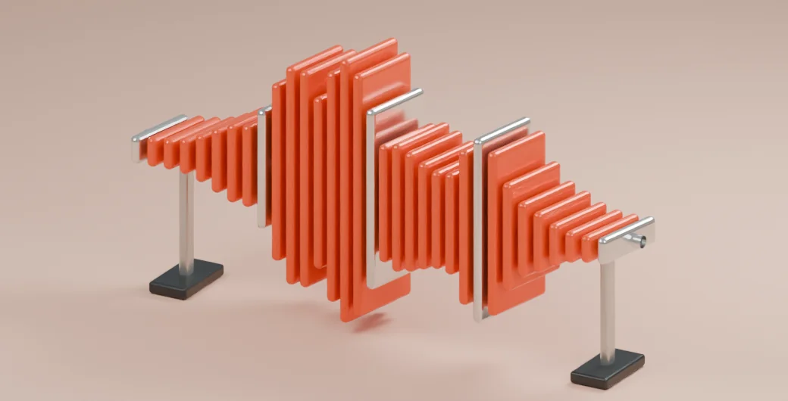
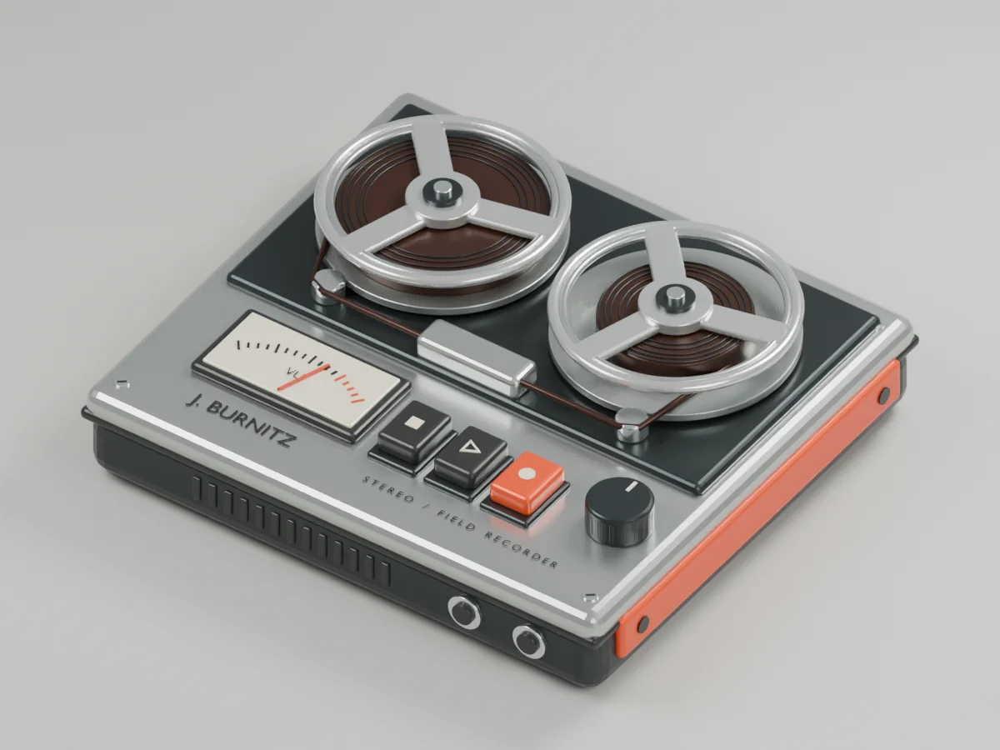
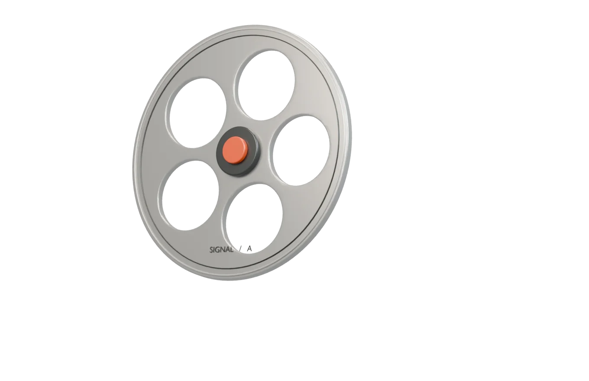
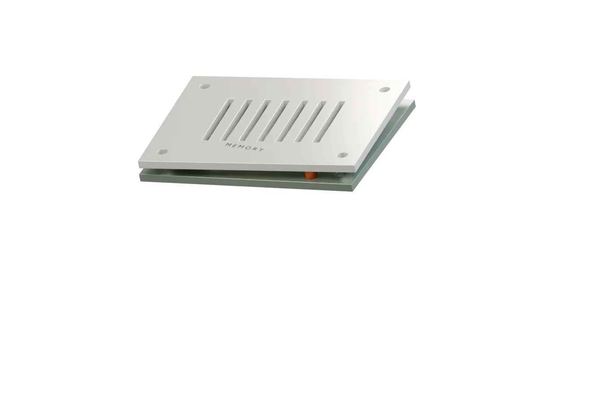
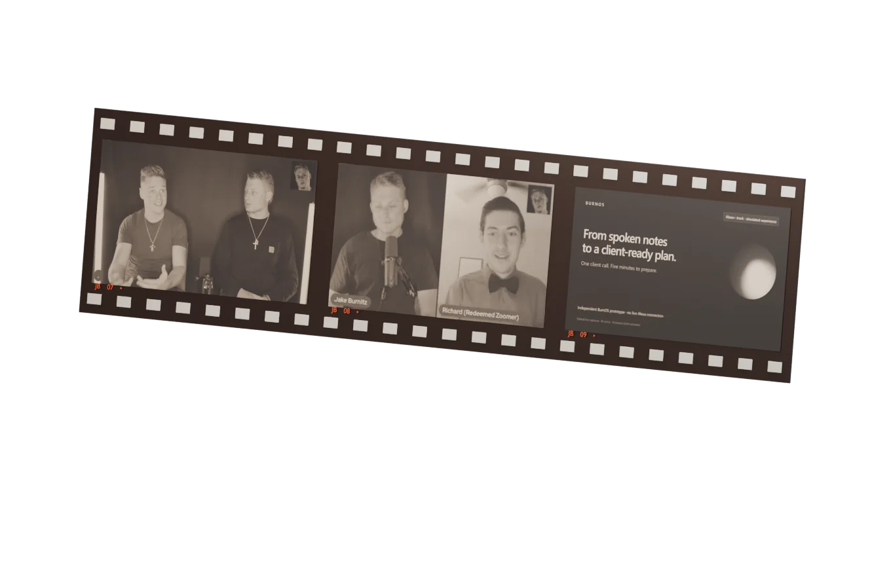
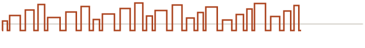
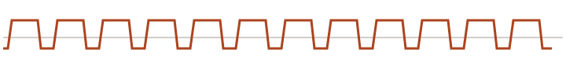
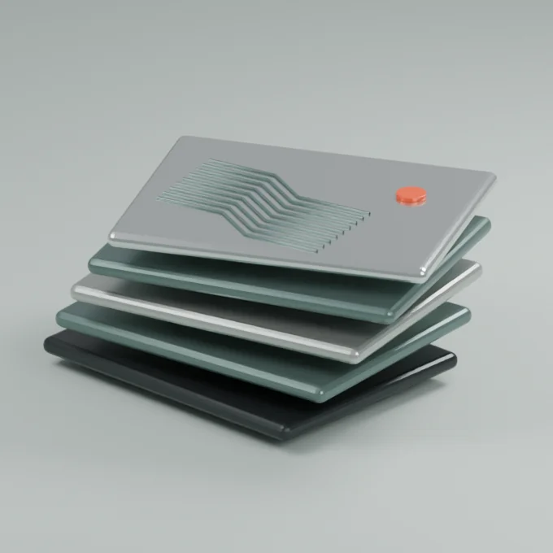
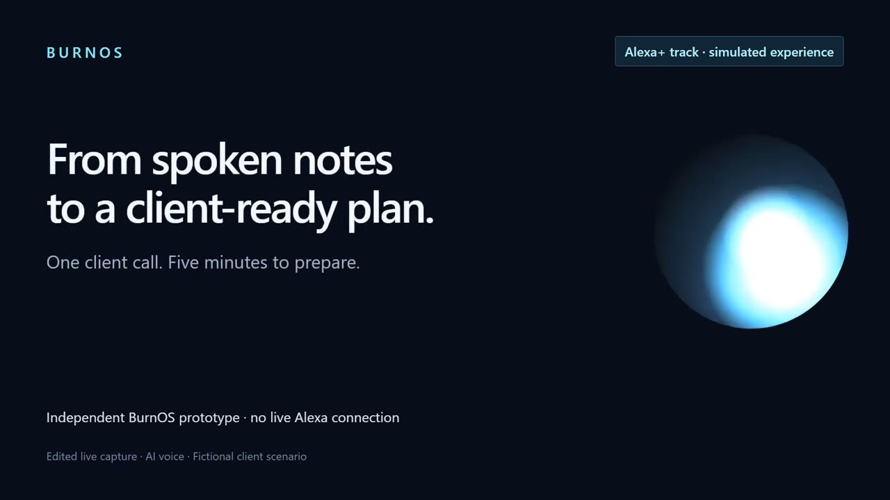

Voice interface
BurnOS
A voice-first desktop assistant for turning spoken ideas into notes, research, and follow-up work.
Independent developer & creator

I’m Jake Burnitz. I build software you can talk to and tools that help AI remember. On camera, I ask the questions I’m curious about.
A studio study by Jake Burnitz







BurnOS begins with a spoken idea. In this study, a five-hole reel carries that idea forward on a copper ribbon.
Mnemosyne gives an AI agent a way to remember. Each slotted plate in this stack holds a different moment.

The gate advances through stills from my interviews and the BurnOS demo. A conversation becomes something you can watch again.

A silent tracking shot follows the copper ribbon from reel to gate. Generated in Gemini, cut in FilmCraft, and finished in EffectCraft.

Voice interface
A voice-first desktop assistant for turning spoken ideas into notes, research, and follow-up work.

Agent memory
Open-source, local-first memory for AI agents, with hybrid retrieval and evidence behind what it remembers.
Memory evaluation
A benchmark site for comparing AI memory systems and inspecting the results and evaluation methods.
Conversations about Christianity, reflections on AI, and a few things I’ve learned along the way.
